Alenuihāhā Channel Marine Weather Briefing
Generated Sat 03 Oct 2026 06:30 HST (16:30 UTC) · built twice a day, about 06:30 and 18:30 HST · confirm each product's issue and valid times before relying on it
Channel outlook
Alenuihāhā Channel, built Sat 03 Oct 06:30 HSTNWS zone forecast
- Today15–20 kt East Northeast
- Tonight15–20 kt East Northeast
- Sunday20–25 kt East Northeast
Models (median)
- Mid-channel now14 kt
- Mid-channel, highest next 24 h18 kt Sun 04:00
- Mid-channel, highest next 48 h19 kt Sun 17:00
- Off Honokōhau, highest next 24 h8 kt Sat 07:00
Model agreement
- Last 6 RRFS runsRuns agree within 2 kt
- Chance of 30 kt+ mid-channel0% Mon 05:00
- REFS spread (next 48 h)± 3 kt
Model comparison · Wind maps · REFS maps · Zone forecasts · Pressure gradient
Sun & moon mid-channel Sat 3 Oct: sunrise 06:15 · sunset 18:10 · civil dusk 18:32 · last quarter, 49% lit · UV peak 11 (extreme) today more →
About this report
This automated marine weather briefing is generated using data from the following official sources:
- NWS Honolulu (HFO) coastal/offshore marine forecasts and AFD (via
tgftp.nws.noaa.gov). - NOAA Ocean Prediction Center (OPC) Pacific surface, 500 mb, and wind/wave analyses.
- NDBC buoys (e.g., 51000 and 51002) for pressure and wind observations.
- NOAA GFS 0.25° mean sea-level pressure (PRMSL) fields for synoptic and channel isobar analysis (downloaded through the NOMADS grib filter, 0.25° with a 1° fallback).
- NOAA/NESDIS STAR GOES‑18 Tropical West and HI sector geocolor imagery.
- ASCAT Coastal UHR scatterometer winds (12.5 km) for coastal wind detail.
- Hilo (91285) upper‑air soundings from the University of Wyoming (newest launches) and the Iowa Environmental Mesonet (older ones) for trade‑wind inversion detection; Skew‑T diagrams drawn from them.
- Model wind comparison: NOAA RRFS (deterministic runs and ensemble members) and REFS (NOMADS), the National Blend of Models (AWS), UH WRF (PacIOOS THREDDS), and the NWS Honolulu gridded forecast (
api.weather.gov).
These sources are combined to provide a practical overview for the Alenuihāhā Channel, balancing large‑scale context (Pacific High, PRMSL) with local indicators (buoys, ASCAT, TWI). Time stamps are shown in both HST and UTC where applicable.
All data is pulled directly from official sources at the time of report generation. Click on any active link to view the most current data available.
How everything here is made, its sources, assumptions and limits, and the weather behind it: the guide.
Credits. Forecasts, charts, observations and model data from NOAA (National Weather Service, Ocean Prediction Center, NCEP, NDBC, NOS CO-OPS), which are not subject to copyright. Satellite imagery: NOAA / NESDIS Center for Satellite Applications and Research (STAR). ASCAT winds: Copyright 2026 EUMETSAT (EUMETSAT OSI SAF / KNMI). UH WRF data provided by PacIOOS (www.pacioos.org), which is a part of the U.S. Integrated Ocean Observing System (IOOS®), funded in part by National Oceanic and Atmospheric Administration (NOAA) Award #NA21NOS0120091. Hilo soundings: University of Wyoming. Maunakea discussion: Maunakea Weather Center, University of Hawaiʻi. Zone forecast archive: Iowa Environmental Mesonet. UV Index: US EPA / NOAA CPC. Map outlines: Natural Earth.
This report is intended to support weather study, learning, and awareness and is not a substitute for official forecasts or responsible decision-making.
Source summary
27 sources: 20 current · 1 late · 1 didn't answer · 2 undated · 3 live. Ages update as you read; times are from each product itself.
All 27 sources with issue and valid times
| Source | Time | Age | Valid until | Status |
|---|---|---|---|---|
| Synoptic | ||||
| OPC surface / 500 mb / wind-wave charts Charts: 10 current, 5 late. Time shown is the newest analysis. | Valid Sat 03 Oct 2:00 AM HST (12:00Z) | 5 h ago | — | Late: newer issue overdue |
| High Seas Forecast (Metarea XII) | Issued Sat 03 Oct 1:45 AM HST (11:45Z) | 5 h ago | Superseded Sat 03 Oct 7:45 AM HST (17:45Z) | Current |
| HFO North Pacific surface analysis Loads from NOAA when you open the page. | — | — | Live | |
| Regional | ||||
| GOES-West satellite imagery Loads from NOAA when you open the page. | — | — | Live | |
| Honolulu Area Forecast Discussion | Issued Sat 03 Oct 3:28 AM HST (13:28Z) | 3 h ago | — | Current |
| Hawaiʻi Offshore Waters Forecast (40–240 nm) | Issued Sat 03 Oct 5:12 AM HST (15:12Z) | 1 h ago | Expires Sat 03 Oct 12:30 PM HST (22:30Z) | Current |
| Hawaiʻi Statewide Coastal Waters Forecast (to 40 nm) | Issued Sat 03 Oct 3:33 AM HST (13:33Z) | 3 h ago | — | Current |
| Maunakea Observatories Forecast Discussion | — | — | No time given | |
| Local marine zones | ||||
| Big Island Leeward Waters (PHZ123) | Issued Sat 03 Oct 3:32 AM HST (13:32Z) | 3 h ago | Expires Sat 03 Oct 4:30 PM HST (02:30Z) | Current |
| Alenuihaha Channel (PHZ121) | Issued Sat 03 Oct 3:32 AM HST (13:32Z) | 3 h ago | Expires Sat 03 Oct 4:30 PM HST (02:30Z) | Current |
| Big Island Windward Waters (PHZ122) | Issued Sat 03 Oct 3:32 AM HST (13:32Z) | 3 h ago | Expires Sat 03 Oct 4:30 PM HST (02:30Z) | Current |
| Maui County Windward Waters (PHZ117) | Issued Sat 03 Oct 3:32 AM HST (13:32Z) | 3 h ago | Expires Sat 03 Oct 4:30 PM HST (02:30Z) | Current |
| Maui County Leeward Waters (PHZ118) | Issued Sat 03 Oct 3:32 AM HST (13:32Z) | 3 h ago | Expires Sat 03 Oct 4:30 PM HST (02:30Z) | Current |
| Kamuela radar (PHKM) Loads from NOAA when you open the page. | — | — | Live | |
| Models | ||||
| RRFS extended run (NOAA) | Run Sat 03 Oct 2:00 AM HST (12:00Z) | 5 h ago | — | Current |
| REFS ensemble (NOAA) | Run Sat 03 Oct 2:00 AM HST (12:00Z) | 5 h ago | — | Current |
| RRFS ensemble members (NOAA) 11 answers per hour | Run Sat 03 Oct 2:00 AM HST (12:00Z) | 5 h ago | — | Current |
| National Blend of Models (NOAA) | Run Sat 03 Oct 5:00 AM HST (15:00Z) | 2 h ago | — | Current |
| UH WRF (PacIOOS) failed | — | — | Didn't answer | |
| NWS Honolulu gridded forecast | Updated Sat 03 Oct 6:03 AM HST (16:03Z) | 27 min ago | — | Current |
| ASCAT coastal winds Pass times are printed on the image. | — | — | No time given | |
| ASCAT forecast verification 30 passes on the verification page. | Observed Fri 02 Oct 9:53 PM HST (07:53Z) | 9 h ago | — | Current |
| Experimental | ||||
| Pacific High analysis (GFS) | Valid Sat 03 Oct 2:00 AM HST (12:00Z) | 5 h ago | — | Current |
| NDBC buoys 51000 / 51002 | Observed Sat 03 Oct 5:40 AM HST (15:40Z) | 50 min ago | — | Current |
| Station pressure gradient (NWS, Hawaiʻi Mesonet, NOAA tide gauge) | Observed Sat 03 Oct 6:00 AM HST (16:00Z) | 30 min ago | — | Current |
| Hilo sounding | Observed Sat 03 Oct 2:00 AM HST (12:00Z) | 5 h ago | — | Current |
| Sun and sky | ||||
| UV Index forecast (EPA) Today's hourly forecast; sun and moon times are computed, not downloaded. | — | — | Current | |
All sections
- Channel outlook
- Source summary: issue, valid and expiry times
- Synoptic Level: Pacific Ocean Basin
- Synoptic to Regional Level
- Local Level: Marine Forecast Zones
- Channel Wind Forecast: Model Comparison
- ASCAT Coastal Winds (UHR)
- Forecast Verification against ASCAT (separate page)
- Sun & Moon
- Experimental — Alenuihāhā Channel Wind Analysis
Synoptic Level: Pacific Ocean Basin
Latest Surface, 500 MB, and Wind/Wave Matrix (Ocean Prediction Center)
| Latest | 24 h | 48 h | 72 h | 96 h | |
|---|---|---|---|---|---|
| Surface AnalysisForecasts from the 00Z Sat 03 Oct run | 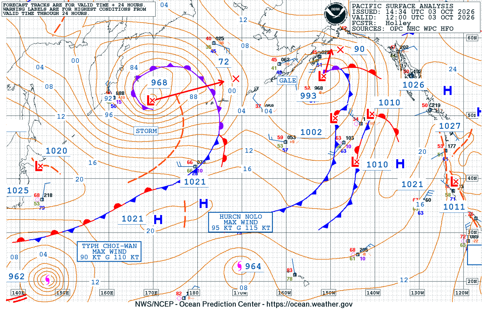 |
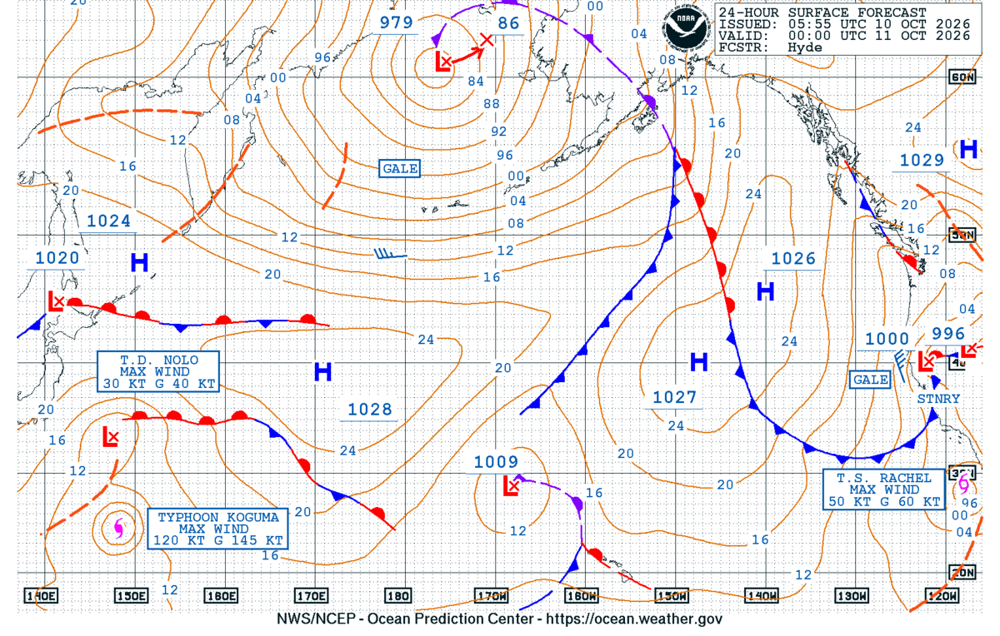 |
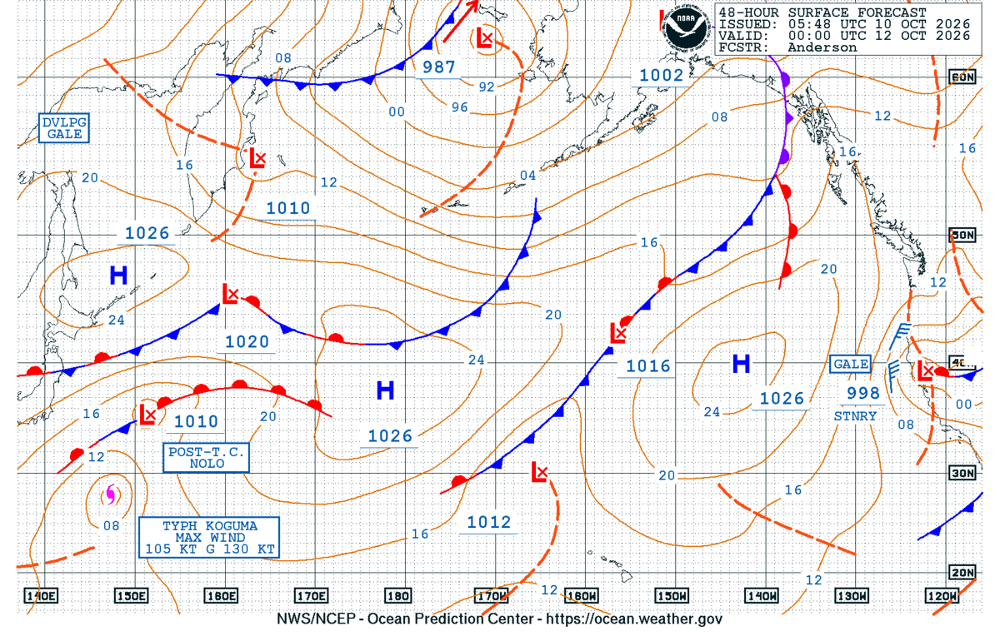 |
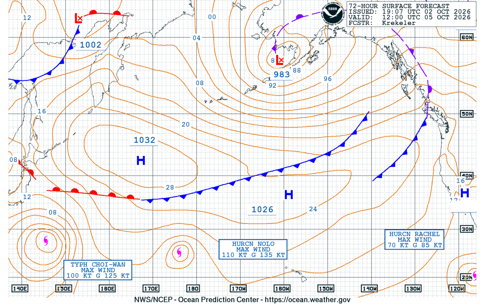 |
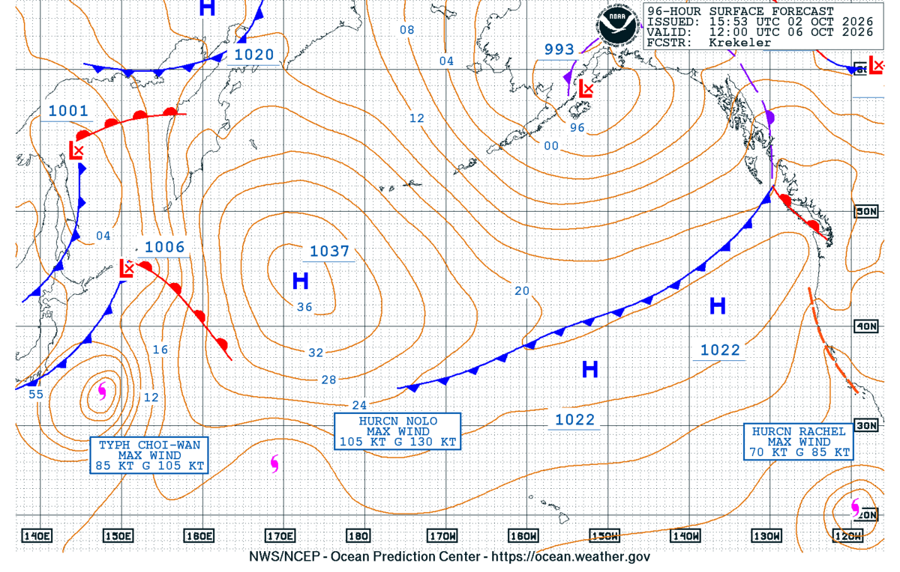 |
| 500 mbForecasts from the 00Z Sat 03 Oct run | 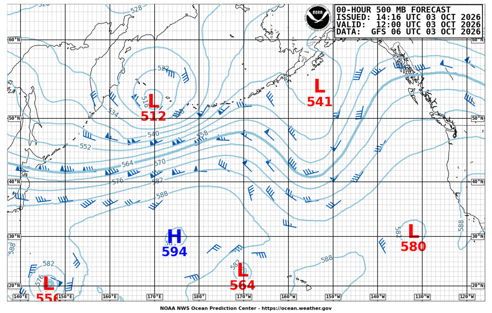 |
 |
 |
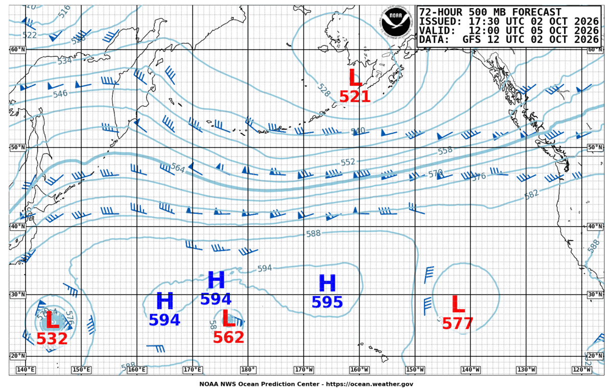 |
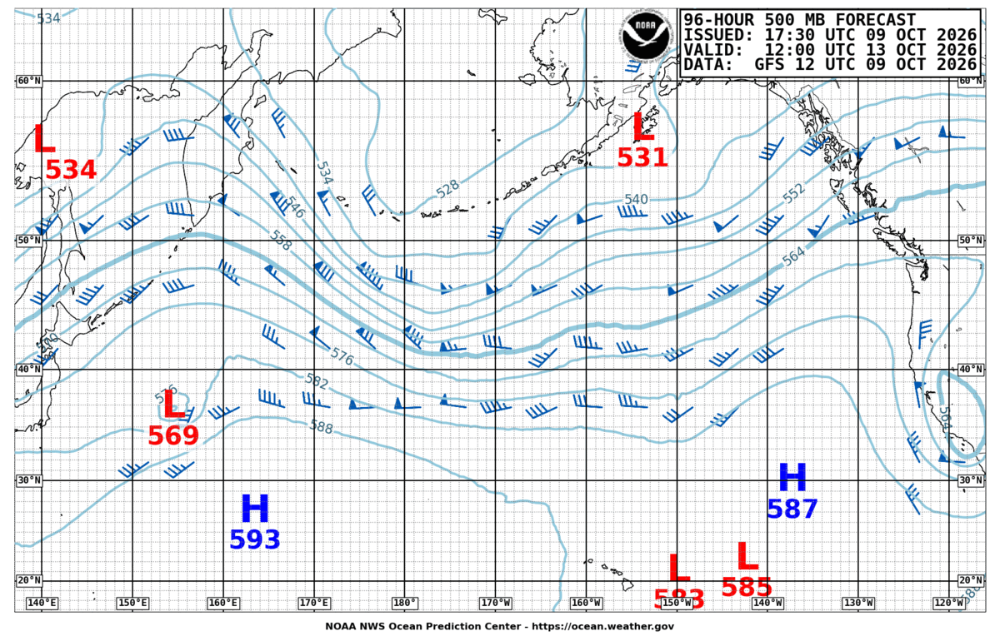 |
| Wind / WaveForecasts from the 00Z Sat 03 Oct run | 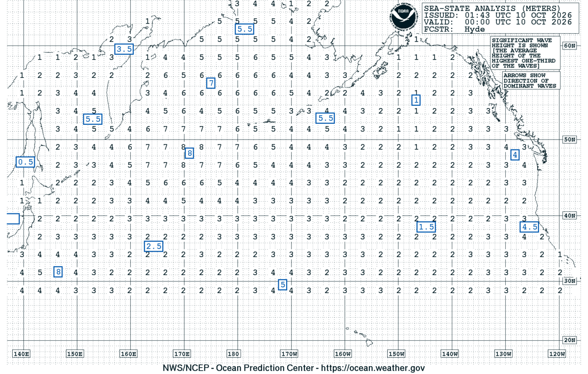 |
 |
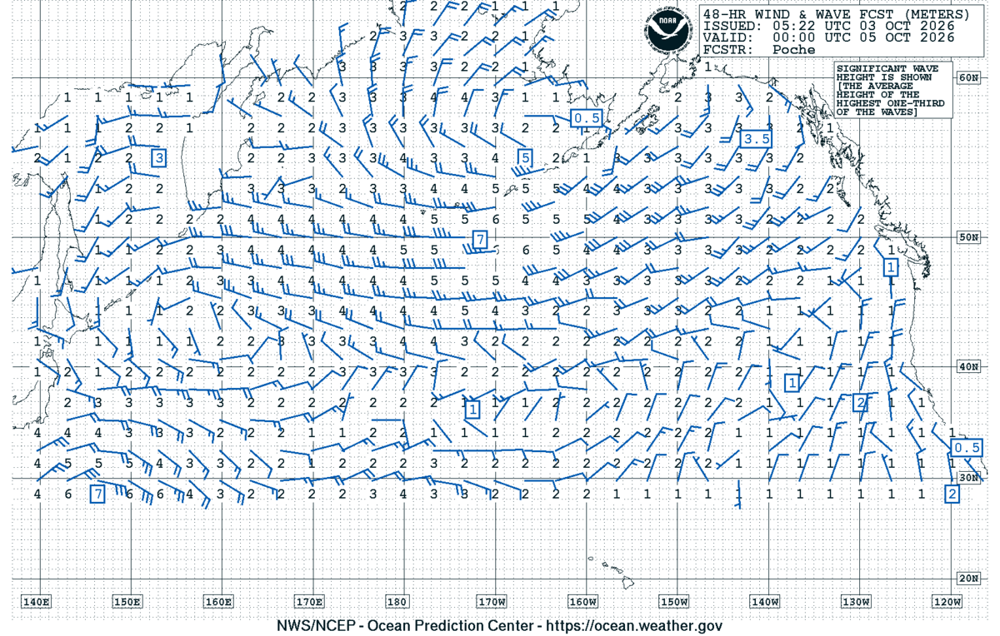 |
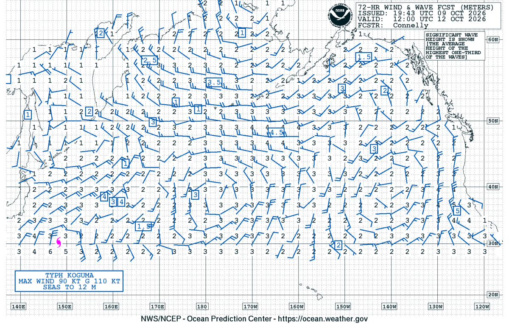 |
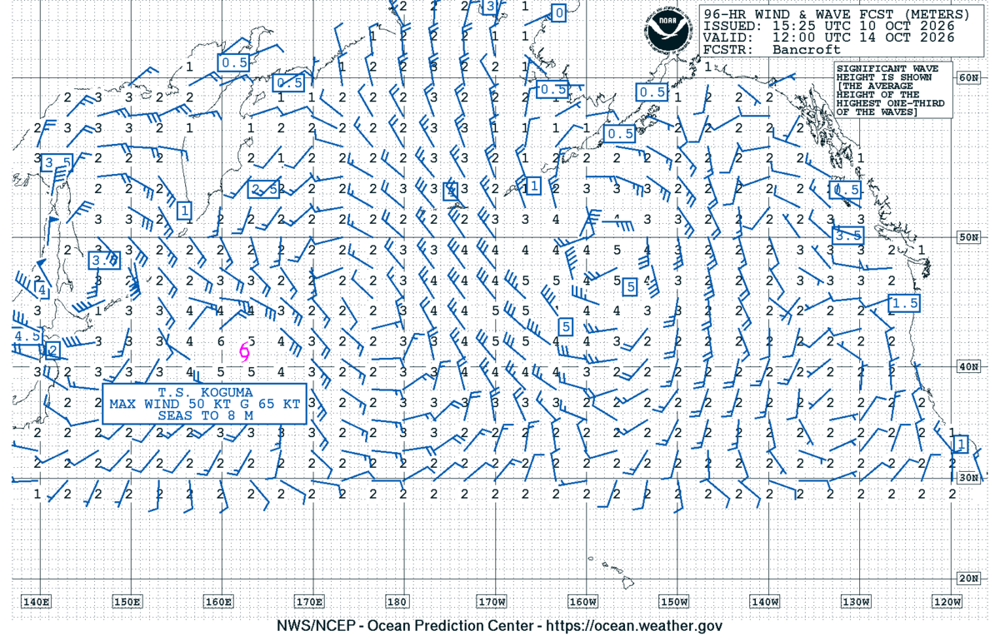 |
NWS Honolulu North Pacific Surface Analysis (Latest)
The Honolulu forecasters' own surface analysis, next to OPC's: it reaches farther into the tropics, covering the ITCZ and the trade-wind belt around Hawaiʻi. Use it for the position and strength of the Pacific High and the fronts, troughs, lows and gales affecting the islands, and to check the automatic Pacific High analysis in the channel analysis section.

High Seas Forecast (Metarea XII)
CCODE/2:31:12:11:00/AOW+POR+AOE/NWS/CCODE SUPERSEDED BY NEXT ISSUANCE IN 6 HOURS SEAS GIVEN AS SIGNIFICANT WAVE HEIGHT...WHICH IS THE AVERAGE HEIGHT OF THE HIGHEST 1/3 OF THE WAVES. INDIVIDUAL WAVES MAY BE MORE THAN TWICE THE SIGNIFICANT WAVE HEIGHT. ONLY YOU KNOW THE WEATHER AT YOUR POSITION. REPORT IT TO THE NATIONAL WEATHER SERVICE. EMAIL US AT VOSOPS@NOAA.GOV(LOWERCASE). FOR ANY TROPICAL CYCLONE INFORMATION BEYOND 48 HOURS REFERENCE THE ASSOCIATED NWS TROPICAL CYCLONE FORECAST/ADVISORY (TCM). FROM OCTOBER 15 TO APRIL 1, DUE TO THE CLIMATOLOGY OF THE NORTH PACIFIC AND THE FREQUENCY AND VOLUME OF WEATHER HAZARDS, ALONG WITH CUSTOMER FEEDBACK, HIGH SEAS FORECASTS WILL BE LIMITED TO WINDS OF 25 TO 35 KNOTS AND HIGHER, AND SEAS OF 4 METERS OR GREATER, ALONG WITH FREEZING SPRAY, DENSE FOG, VOLCANIC ASH, AND ANYTHING TROPICAL (INCLUDING A DEPRESSION). LESSER CONDITIONS WILL BE INCLUDED FOR WARNING CONDITIONS AND TO PRESERVE CONTINUITY WHERE APPROPRIATE. SECURITE PACIFIC S OF 67N AND N OF 30N E OF A LINE FROM THE BERING STRAIT TO 53N172E TO 50N180W TO 30N180W ALL FORECASTS VALID OVER ICE FREE FORECAST WATERS SYNOPSIS VALID 0600 UTC OCT 03. 24 HOUR FORECAST VALID 0600 UTC OCT 04. 48 HOUR FORECAST VALID 0600 UTC OCT 05. .WARNINGS. ...STORM WARNING... .COMPLEX LOW WITH MAIN CENTER NEAR 55N152W 992 MB MOVING N 05 KT. WITHIN 180 NM NW OF A LINE FROM 58N146W TO 53N157W...WITHIN 240 NM SW OF A LINE FROM 44N159W TO 47N165W...AND FROM 50N TO 57N BETWEEN 142W AND 150W WINDS 25 TO 40 KT. SEAS 2.5 TO 4.5 M. ELSEWHERE FROM 36N TO 60N BETWEEN 141W AND 176W WINDS TO 25 KT. SEAS 2.5 TO 4.5 M. .12 HOUR FORECAST COMPLEX LOW WITH MEAN CENTER NEAR 56N151W 994 MB. WITHIN 60 NM N AND NW OF A LINE FROM 59N143W TO 59N150W TO 56N154W WINDS 35 TO 50 KT. SEAS 3.5 TO 5 M. .24 HOUR FORECAST LOW 57N151W 990 MB. WITHIN 60 NM NE OF A LINE FROM 55N135W TO 60N147W WINDS 35 TO 45 KT. SEAS 4 TO 5.5 M. ELSEWHERE WITHIN 150 NM E OF A LINE FROM 49N139W TO 56N138W TO 60N149W...AND WITHIN 240 NM OF CENTER WINDS 25 TO 35 KT. SEAS 3 TO 4.5 M. ELSEWHERE FROM 47N TO 61N BETWEEN 131W AND 153W WINDS TO 25 KT. SEAS TO 3.5 M. .48 HOUR FORECAST LOW MOVED INLAND AND CONDITIONED MERGED WITH LOW 56N163W DESCRIBED BELOW. ...STORM WARNING... .LOW W OF AREA NEAR 52N165E 968 MB MOVING E 30 KT. FROM 41N TO 62N W OF 176W WINDS 25 TO 35 KT. SEAS 2.5 TO 4 M. .12 HOUR FORECAST LOW 52N174E 966 MB. WITHIN 150 NM S SEMICIRCLE WINDS 45 TO 55 KT. SEAS 4 TO 7 M. .24 HOUR FORECAST LOW 54N176W 971 MB. WITHIN 300 NM S SEMICIRCLE WINDS 35 TO 45 KT. SEAS 5 TO 7.5 M. ELSEWHERE FROM 44N TO 55N BETWEEN 167W AND 171E...AND BETWEEN 240 NM AND 480 NM N SEMICIRCLE WINDS 25 TO 35 KT. SEAS 3 TO 6 M. ELSEWHERE FROM 39N TO 63W OF 153W WINDS TO 25 KT. SEAS 2.5 TO 5 M. .48 HOUR FORECAST LOW 56N163W 979 MB. FROM 44N TO 57N BETWEEN 147W AND 179W WINDS 20 TO 30 KT. SEAS 3.5 TO 6.5 M. ELSEWHERE BETWEEN A LINE FROM 36N180W TO 50N135W AND 62N W OF 135W WINDS LESS THAN 25 KT. SEAS 2.5 TO 5 M. .SYNOPSIS AND FORECAST. .FROM 33N TO 40N BETWEEN 124W AND 131W WINDS TO 25 KT. SEAS TO 3 M. .24 HOUR FORECAST CONDITIONS DIMINISHED. .24 HOUR FORECAST ASSOCIATED WITH HURRICANE NOLO CENTERED S OF AREA. S OF 32N BETWEEN 169W AND 178W WINDS LESS THAN 25 KT. SEAS TO 3 M. .48 HOUR FORECAST ASSOCIATED WITH HURRICANE NOLO CENTERED SW OF AREA. S OF 32N W OF 174W WINDS TO 25 KT. SEAS TO 3.5 M. DENSE FOG. VSBY OCCASIONALLY LESS THAN 1 NM FROM 44N TO 49N BETWEEN 141W AND 146W...AND FROM 53N TO 56N BETWEEN 150W AND 153W. .24 HOUR FORECAST DENSE FOG NW OF A LINE FROM 60N177W TO 59N180W. .48 HOUR FORECAST DENSE FOG CONDITIONS IMPROVED. .FORECASTER POCHE. OCEAN PREDICTION CENTER. NWS NATIONAL HURRICANE CENTER MIAMI FL E PACIFIC FROM THE EQUATOR TO 30N E OF 140W AND 03.4S TO THE EQUATOR E OF 120W SYNOPSIS VALID 0600 UTC SAT OCT 3. 24 HOUR FORECAST VALID 0600 UTC SUN OCT 4. 48 HOUR FORECAST VALID 0600 UTC MON OCT 5. .WARNINGS. ...HURRICANE WARNING... .HURRICANE RACHEL NEAR 19.4N 111.8W 969 MB AT 0900 UTC OCT 03 MOVING W OR 275 DEG AT 4 KT. MAXIMUM SUSTAINED WINDS 80 KT GUSTS 100 KT. TROPICAL STORM FORCE WINDS WITHIN 130 NM N SEMICIRCLE AND 120 NM S SEMICIRCLE. SEAS 4 M OR GREATER WITHIN 180 NM W SEMICIRCLE...210 NM NE QUADRANT AND 270 NM SE QUADRANT WITH SEAS TO 11 M. ELSEWHERE WITHIN 22N109W TO 23N113W TO 19N115W TO 13N114W TO 11N110W TO 17N107W TO 22N109W WINDS 20 TO 33 KT. SEAS DESCRIBED ABOVE. REMAINDER AREA WITHIN 24N107W TO 27N118W TO 20N120W TO 11N118W TO 10N109W TO 14N101W TO 24N107W WINDS 20 KT OR LESS. SEAS 2.5 TO 4.0 M IN MIXED SWELL. .24 HOUR FORECAST HURRICANE RACHEL NEAR 19.9N 113.2W. MAXIMUM SUSTAINED WINDS 75 KT GUSTS 90 KT. TROPICAL STORM FORCE WINDS WITHIN 110 NM OF CENTER EXCEPT 100 NM SE QUADRANT. SEAS 4 M OR GREATER WITHIN 210 NM E AND 180 NM E SEMICIRCLES WITH SEAS TO 10 M. ELSEWHERE WITHIN 22N110W TO 22N115W TO 20N116W TO 18N116W TO 16N114W TO 18N110W TO 22N110W WINDS 20 TO 33 KT. SEAS DESCRIBED ABOVE. REMAINDER AREA WITHIN 24N108W TO 28N116W TO 20N123W TO 09N116W TO 08N111W TO 14N104W TO 24N108W WINDS 20 KT OR LESS. SEAS 2.5 TO 4.0 M IN MIXED SWELL. .48 HOUR FORECAST HURRICANE RACHEL NEAR 20.2N 115.2W. MAXIMUM SUSTAINED WINDS 70 KT GUSTS 85 KT. TROPICAL STORM FORCE WINDS WITHIN 100 NM OF CENTER EXCEPT 110 NM NE QUADRANT. SEAS 4 M OR GREATER WITHIN 180 NM NE QUADRANT...210 NM SE QUADRANT...150 NM SW QUADRANT...AND 210 NM NW QUADRANT WITH SEAS TO 10 M. ELSEWHERE WITHIN 22N112W TO 23N115W TO 21N118W TO 18N118W TO 16N116W TO 19N113W TO 22N112W WINDS 20 TO 33 KT. SEAS DESCRIBED ABOVE. REMAINDER AREA WITHIN 23N108W TO 27N115W TO 25N121W TO 18N121W TO 10N113W TO 14N107W TO 23N108W WINDS 20 KT OR LESS. SEAS 2.5 TO 4.0 M IN MIXED SWELL. FORECAST WINDS IN AND NEAR ACTIVE TROPICAL CYCLONES SHOULD BE USED WITH CAUTION DUE TO UNCERTAINTY IN FORECAST TRACK...SIZE AND INTENSITY. .SYNOPSIS AND FORECAST. .36 HOUR FORECAST WITHIN 12N96W TO 14N97W TO 14N98W TO 13N99W TO 10N98W TO 10N96W TO 12N96W WINDS 20 KT OR LESS. SEAS 2.5 TO 3.0 M IN MIXED SWELL. .48 HOUR FORECAST WITHIN 12N95W TO 14N98W TO 13N100W TO 10N100W TO 08N97W TO 10N95W TO 12N95W W TO NW WINDS 20 TO 25 KT. SEAS 2.5 TO 3.0 M IN MIXED SWELL. .REMAINDER OF AREA WINDS 20 KT OR LESS. SEAS LESS THAN 2.5 M. CONVECTION VALID AT 0830 UTC SAT OCT 3... .HURRICANE RACHEL...NUMEROUS MODERATE TO STRONG WITHIN 90 NM OF CENTER. SCATTERED MODERATE ISOLATED STRONG ELSEWHERE FROM 10N TO 20N BETWEEN 107W AND 120W. .INTERTROPICAL CONVERGENCE ZONE/MONSOON TROUGH... MONSOON TROUGH FROM 10N86W TO 17N101W. IT RESUMES W OF RACHEL NEAR 16N116W TO 15N130W TO 10N140W. SCATTERED MODERATE N OF 00N E OF 90W...FROM 10N TO 16N BETWEEN 90W AND 102W...AND FROM 00N TO 10N BETWEEN 130W AND 140W. .FORECASTER AL. NATIONAL HURRICANE CENTER. NATIONAL WEATHER SERVICE HONOLULU HI NORTH PACIFIC EQUATOR TO 30N BETWEEN 140W AND 180W SYNOPSIS VALID 0600 UTC OCT 03 2026. 24 HOUR FORECAST VALID 0600 UTC OCT 04 2026. 48 HOUR FORECAST VALID 0600 UTC OCT 05 2026. .WARNINGS. ...HURRICANE WARNING... .HURRICANE NOLO NEAR 23.3N 169.6W 964 MB AT 0900 UTC OCT 03 MOVING W OR 270 DEG AT 9 KT. MAXIMUM SUSTAINED WINDS 95 KT GUSTS 115 KT. TROPICAL STORM FORCE WINDS WITHIN 100 NM N SEMICIRCLE...80 NM SE QUADRANT AND 70 NM SW QUADRANT. SEAS 4 M OR GREATER WITHIN 180 NM NE AND SW QUADRANTS...210 NM NW QUADRANT AND 120 NM SE QUADRANT WITH SEAS TO 7 M. WINDS 20 TO 30 KT AND SEAS 2.5 TO 4 M ELSEWHERE FROM 20N TO 29N W OF 164W. SCATTERED MODERATE TO STRONG TSTMS FROM 22N TO 25N BETWEEN 167W AND 172W. .24 HOUR FORECAST HURRICANE NOLO NEAR 23.6N 175.4W. MAXIMUM SUSTAINED WINDS 115 KT GUSTS 140 KT. TROPICAL STORM FORCE WINDS WITHIN 120 NM NE QUADRANT...80 NM SE QUADRANT...70 NM SW QUADRANT...AND 110 NM NW QUADRANT. SEAS 4 M OR GREATER WITHIN 200 NM NE AND SW QUADRANTS...230 NM NW QUADRANT AND 130 NM SE QUADRANT WITH SEAS TO 11 M. WINDS 20 TO 30 KT AND SEAS 2.5 TO 4 M ELSEWHERE N OF 19N W OF 167W. .48 HOUR FORECAST TYPHOON NOLO W OF FORECAST AREA NEAR 24.9N 177.9E. MAXIMUM SUSTAINED WINDS 120 KT GUSTS 145 KT. OVER FORECAST WATERS...TROPICAL STORM FORCE WINDS WITHIN 120 NM NE QUADRANT AND 110 NM SE QUADRANT. OVER FORECAST WATERS...SEAS 4 M OR GREATER WITHIN 200 NM NE QUADRANT AND 130 NM SE QUADRANT. WINDS 20 TO 30 KT AND SEAS 2.5 TO 4 M ELSEWHERE N OF 21N W OF 175W. FORECAST WINDS IN AND NEAR ACTIVE TROPICAL CYCLONES SHOULD BE USED WITH CAUTION DUE TO UNCERTAINTY IN FORECAST TRACK...SIZE AND INTENSITY. .SYNOPSIS AND FORECAST. .LOW 15N146W 1010 MB MOVING W 15 KT. .24 HOUR FORECAST LOW DISSIPATED. TROUGH 16N149W 12N150W. .48 HOUR FORECAST TROUGH 14N155W 11N155W. .WEAK TROUGH 30N165W 29N168W MOVING W 10 KT. .24 HOUR FORECAST TROUGH DISSIPATED. .WINDS 20 KT OR LESS AND SEAS 2.5 M OR LESS OVER REMAINDER OF FORECAST AREA. .MONSOON TROUGH 09N180W 13N171W...AND 11N164W 07N150W 09N140W. ISOLATED MODERATE TSTMS S OF 13N W OF 164W...AND S OF TROUGH E OF 164W...EXCEPT SCATTERED MODERATE TSTMS S OF 06N BETWEEN 158W AND 153W. $$ .FORECASTER WROE. HONOLULU HI.
Synoptic to Regional Level
Latest Satellite Imagery
These load live from NOAA each time the page opens.
GOES-West - Tropical West GeoColor (day true color, night multispectral IR)

GOES-West - Hawaiʻi Sector GeoColor (day true color, night multispectral IR)

Honolulu Area Forecast Discussion
A drier air mass with lower humidity, sunny skies and light to moderate winds expected through Sunday. Isolated showers possible windward and mauka spots. Winds should decrease early next week allowing land and sea breezes to develop.
Looking at satellite and radar imagery this morning, isolated showers are ongoing along windward and mauka spots across the state. High pressure is expected to build back over the state dropping humidity levels and ushering in sunny skies through Sunday.
Early next week, trades will weaken in response to an approaching surface trough and then will weaken further heading into midweek as broad troughing develops northwest of the state. In this lighter flow, land and sea breezes will develop with clearing expected overnight and clouds and a few showers over leeward and interior areas each afternoon.
The high pressure ridge will build back over the Hawaii region with drier easterly trade wind weather returning just in time for the weekend. Lower humidity levels and mostly sunny skies will prevail through Sunday.
No AIRMETs in effect.
Gentle to fresh east to northeast trade winds fill back in today as Hurricane Nolo accelerates westward away from the Hawaiian Islands and high pressure strengthens gradually to the north. A Small Craft Advisory has been issued, in effect beginning tonight, when locally strong trades are forecast to develop for the typically windy waters and channels. Locally strong trades may persist into early next week before high pressure to the north weakens again and winds start to diminish. By the middle of next week, troughing developing northwest of the islands may cause winds to veer out of the southeast once again.
A small background south swell will surf mostly steady along south facing shores through the weekend. A new small, long-period south swell, originating from a large fetch of gale force winds southeast of New Zealand earlier this week, is forecast to arrive beginning Sunday and peak Monday through Wednesday. This will push surf to slightly above seasonal averages for the first half of next week.
A small bump in surf along north-facing shores will decrease today as a small, short period north swell fades. Another small bump in north shore surf is possible early next week as a small, medium-period northwest swell arrives late Sunday and peaks on Monday. This will be followed by a slightly larger long-period northwest swell peaking on Wednesday, giving a good boost to north shore surf for mid-week. Surf along east facing shores will increase and become more choppy through tonight as easterly trades build back into the region.
Drier air is expected over the weekend as light to moderate east- northeasterly trades return. Winds are expected to decrease early to midweek. Isolated showers will favor windward and mauka areas overnight into the early morning hours. Fire weather conditions will remain below critical threshold this week for both wind and humidity levels. Temperature inversion heights are around 5000-7000ft.
Small Craft Advisory from 6 PM this evening to 6 PM HST Sunday for Maalaea Bay-Pailolo Channel-Alenuihaha Channel-Big Island Leeward Waters-Big Island Southeast Waters.
DISCUSSION...Walsh AVIATION...Bohlin MARINE...Quesada FIRE WEATHER...Walsh
Original text
FXHW60 PHFO 031328 AFDHFO Area Forecast Discussion National Weather Service Honolulu HI 328 AM HST Sat Oct 3 2026 .SYNOPSIS... A drier air mass with lower humidity, sunny skies and light to moderate winds expected through Sunday. Isolated showers possible windward and mauka spots. Winds should decrease early next week allowing land and sea breezes to develop. && .DISCUSSION... Looking at satellite and radar imagery this morning, isolated showers are ongoing along windward and mauka spots across the state. High pressure is expected to build back over the state dropping humidity levels and ushering in sunny skies through Sunday. Early next week, trades will weaken in response to an approaching surface trough and then will weaken further heading into midweek as broad troughing develops northwest of the state. In this lighter flow, land and sea breezes will develop with clearing expected overnight and clouds and a few showers over leeward and interior areas each afternoon. && .AVIATION... The high pressure ridge will build back over the Hawaii region with drier easterly trade wind weather returning just in time for the weekend. Lower humidity levels and mostly sunny skies will prevail through Sunday. No AIRMETs in effect. && .MARINE... Gentle to fresh east to northeast trade winds fill back in today as Hurricane Nolo accelerates westward away from the Hawaiian Islands and high pressure strengthens gradually to the north. A Small Craft Advisory has been issued, in effect beginning tonight, when locally strong trades are forecast to develop for the typically windy waters and channels. Locally strong trades may persist into early next week before high pressure to the north weakens again and winds start to diminish. By the middle of next week, troughing developing northwest of the islands may cause winds to veer out of the southeast once again. A small background south swell will surf mostly steady along south facing shores through the weekend. A new small, long-period south swell, originating from a large fetch of gale force winds southeast of New Zealand earlier this week, is forecast to arrive beginning Sunday and peak Monday through Wednesday. This will push surf to slightly above seasonal averages for the first half of next week. A small bump in surf along north-facing shores will decrease today as a small, short period north swell fades. Another small bump in north shore surf is possible early next week as a small, medium-period northwest swell arrives late Sunday and peaks on Monday. This will be followed by a slightly larger long-period northwest swell peaking on Wednesday, giving a good boost to north shore surf for mid-week. Surf along east facing shores will increase and become more choppy through tonight as easterly trades build back into the region. && .FIRE WEATHER... Drier air is expected over the weekend as light to moderate east- northeasterly trades return. Winds are expected to decrease early to midweek. Isolated showers will favor windward and mauka areas overnight into the early morning hours. Fire weather conditions will remain below critical threshold this week for both wind and humidity levels. Temperature inversion heights are around 5000-7000ft. && .HFO WATCHES/WARNINGS/ADVISORIES... Small Craft Advisory from 6 PM this evening to 6 PM HST Sunday for Maalaea Bay-Pailolo Channel-Alenuihaha Channel-Big Island Leeward Waters-Big Island Southeast Waters. && $$ DISCUSSION...Walsh AVIATION...Bohlin MARINE...Quesada FIRE WEATHER...Walsh
Hawaiʻi Offshore Waters Forecast (40–240 nm)
Hawaiian offshore waters beyond 40 nautical miles out to 240 nautical miles including the portion of the Papahanaumokuakea Marine National Monument east of French Frigate Shoals
Seas given as significant wave height, which is the average height of the highest 1/3 of the waves. Individual waves may be more than twice the significant wave height.
Southeasterly winds become east to northeasterly and strengthen as trade winds return through Saturday night. Winds diminish and veer southeasterly again mid-week.
NW Half, E to SE winds 10 to 15 kt. SE Half, NE to E winds 10 to 20 kt. Seas 6 to 7 ft.
NE to E winds 10 to 20 kt. Seas 6 to 7 ft.
NE winds 15 to 25 kt. Seas 6 to 7 ft.
NE winds 15 to 25 kt. Seas 6 to 8 ft.
NE to E winds 10 to 15 kt. Seas 6 to 7 ft.
E to SE winds 10 to 15 kt. Seas 6 to 7 ft.
Original text
FZHW60 PHFO 031512 OFFHFO Offshore Waters Forecast for Hawaii National Weather Service Honolulu HI 512 AM HST Sat Oct 3 2026 Hawaiian offshore waters beyond 40 nautical miles out to 240 nautical miles including the portion of the Papahanaumokuakea Marine National Monument east of French Frigate Shoals Seas given as significant wave height, which is the average height of the highest 1/3 of the waves. Individual waves may be more than twice the significant wave height. PHZ105-032230- 512 AM HST Sat Oct 3 2026 .Synopsis for the Hawaiian offshore waters... Southeasterly winds become east to northeasterly and strengthen as trade winds return through Saturday night. Winds diminish and veer southeasterly again mid-week. $$ PHZ180-032230- Hawaiian Offshore Waters- 512 AM HST Sat Oct 3 2026 .TODAY...NW Half, E to SE winds 10 to 15 kt. SE Half, NE to E winds 10 to 20 kt. Seas 6 to 7 ft. .TONIGHT AND SUNDAY...NE to E winds 10 to 20 kt. Seas 6 to 7 ft. .SUNDAY...NE winds 15 to 25 kt. Seas 6 to 7 ft. .SUNDAY NIGHT AND MONDAY...NE winds 15 to 25 kt. Seas 6 to 8 ft. .TUESDAY...NE to E winds 10 to 15 kt. Seas 6 to 7 ft. .WEDNESDAY...E to SE winds 10 to 15 kt. Seas 6 to 7 ft. $$
Hawaiʻi Statewide Coastal Waters Forecast (to 40 nm)
Gentle to fresh east to northeast trades fill back in across the waters today. Trades strengthen to locally strong tonight and may persist into early next week before high pressure to the north weakens. A trough developing northwest of the islands by Wednesday may veer winds out of the southeast.
East winds 15 to 20 knots. Seas 4 to 6 feet. Wave Detail: East 3 feet at 4 seconds and south southwest 3 feet at 12 seconds. Isolated showers.
East northeast winds 20 to 25 knots. Seas 5 to 7 feet. Wave Detail: East northeast 5 feet at 5 seconds and south southwest 3 feet at 12 seconds. Isolated showers.
East northeast winds 20 to 25 knots. Seas 5 to 8 feet. Wave Detail: East northeast 5 feet at 5 seconds and south southwest 3 feet at 20 seconds. Isolated showers.
East northeast winds 15 to 20 knots. Seas 5 to 8 feet. Wave Detail: East northeast 5 feet at 6 seconds and south southwest 4 feet at 18 seconds. Isolated showers.
East northeast winds 15 to 20 knots. Seas 5 to 7 feet. Isolated showers.
East winds 10 to 15 knots. Seas 5 to 6 feet. Scattered showers.
Southeast winds 10 to 15 knots. Seas 5 to 6 feet. Scattered showers.
Original text
Expires:No;;464593 FZHW51 PHFO 031333 CWFHI1 Generalized Statewide Coastal Waters Forecast for Hawaii National Weather Service Honolulu HI 333 AM HST Sat Oct 3 2026 .Synopsis for Hawaiian coastal waters... Gentle to fresh east to northeast trades fill back in across the waters today. Trades strengthen to locally strong tonight and may persist into early next week before high pressure to the north weakens. A trough developing northwest of the islands by Wednesday may veer winds out of the southeast. $$ Hawaiian waters within 40 nautical miles including the channels- ...SMALL CRAFT ADVISORY... .TODAY...East winds 15 to 20 knots. Seas 4 to 6 feet. Wave Detail: East 3 feet at 4 seconds and south southwest 3 feet at 12 seconds. Isolated showers. .TONIGHT...East northeast winds 20 to 25 knots. Seas 5 to 7 feet. Wave Detail: East northeast 5 feet at 5 seconds and south southwest 3 feet at 12 seconds. Isolated showers. .SUNDAY...East northeast winds 20 to 25 knots. Seas 5 to 8 feet. Wave Detail: East northeast 5 feet at 5 seconds and south southwest 3 feet at 20 seconds. Isolated showers. .SUNDAY NIGHT...East northeast winds 15 to 20 knots. Seas 5 to 8 feet. Wave Detail: East northeast 5 feet at 6 seconds and south southwest 4 feet at 18 seconds. Isolated showers. .MONDAY AND MONDAY NIGHT...East northeast winds 15 to 20 knots. Seas 5 to 7 feet. Isolated showers. .TUESDAY...East winds 10 to 15 knots. Seas 5 to 6 feet. Scattered showers. .WEDNESDAY...Southeast winds 10 to 15 knots. Seas 5 to 6 feet. Scattered showers. $$
Maunakea Observatories Forecast Discussion
5 PM HST Friday 02 October (0300 UTC Saturday 3 October) 2026
A fairly distinct inversion will continue to cap low-level moisture near 7 thousand feet and ensure a dry/stable summit-level air mass through the next 5 nights. Some afternoon clouds are possible for today, then will become minimal and short-lived for the remainder of the forecast period. Skies overhead will remain predominately clear through the next 5 nights. Precipitable water is expected to linger near or exceed 4 mm through Saturday night, then settle in near 2 mm probably for most of the following 3 nights. A stable air mass, combined with light westerly flow in the free atmosphere and weak winds at the summit should allow seeing to settle in around 0.4-0.5 arcseconds over much of the forecast period. There is a possibility that pool of warm air will move close to area and produce light thermodynamic turbulence just above the summit, which may result in a subtle degradation in seeing mainly around Sunday evening. Also, light/variable winds at the summit may limit mixing and contribute to some degradation in seeing mainly the second half of Friday and Saturday night. No change since the morning forecast...A fairly deep mid/surface ridge will continue to sit to the north of the state well into next week, while a rather flat upper-level ridge lingers to the SE of the Big Island through the weekend. A new deeper ridge will eventually fill in from the NW (drifting to the north of the Islands) early next week, but will likely split in two as a trough digs in from the north around the middle part of the week. Nevertheless, the surrounding ridges will promote steady/strong large-scale subsidence in the area and help maintain a distinct inversion near 7 thousand feet throughout the forecast period. The absence of organized moisture in the area, combined with the inversion, will ensure the summit remains dry/stable through the next 5 nights. Residual mid-level moisture in the area may result in high PW over the next 2 nights, but PW could slip toward 2 mm as the new ridge fills into the region, enhancing the subsidence and detrainment of moisture late in the weekend. Seeing, on the other hand, should settle in near 0.4-0.5 arcseconds as light winds prevail at and above the summit through much of the next 5 nights. There is still a possibility that a warm pool of mid-level air will scrape the eastern portion of the Big Island, perhaps creating a secondary inversion above the summit that may negatively impact seeing mainly around Sunday evening.
Original text
5 PM HST Friday 02 October (0300 UTC Saturday 3 October) 2026 A fairly distinct inversion will continue to cap low-level moisture near 7 thousand feet and ensure a dry/stable summit-level air mass through the next 5 nights. Some afternoon clouds are possible for today, then will become minimal and short-lived for the remainder of the forecast period. Skies overhead will remain predominately clear through the next 5 nights. Precipitable water is expected to linger near or exceed 4 mm through Saturday night, then settle in near 2 mm probably for most of the following 3 nights. A stable air mass, combined with light westerly flow in the free atmosphere and weak winds at the summit should allow seeing to settle in around 0.4-0.5 arcseconds over much of the forecast period. There is a possibility that pool of warm air will move close to area and produce light thermodynamic turbulence just above the summit, which may result in a subtle degradation in seeing mainly around Sunday evening. Also, light/variable winds at the summit may limit mixing and contribute to some degradation in seeing mainly the second half of Friday and Saturday night. No change since the morning forecast...A fairly deep mid/surface ridge will continue to sit to the north of the state well into next week, while a rather flat upper-level ridge lingers to the SE of the Big Island through the weekend. A new deeper ridge will eventually fill in from the NW (drifting to the north of the Islands) early next week, but will likely split in two as a trough digs in from the north around the middle part of the week. Nevertheless, the surrounding ridges will promote steady/strong large-scale subsidence in the area and help maintain a distinct inversion near 7 thousand feet throughout the forecast period. The absence of organized moisture in the area, combined with the inversion, will ensure the summit remains dry/stable through the next 5 nights. Residual mid-level moisture in the area may result in high PW over the next 2 nights, but PW could slip toward 2 mm as the new ridge fills into the region, enhancing the subsidence and detrainment of moisture late in the weekend. Seeing, on the other hand, should settle in near 0.4-0.5 arcseconds as light winds prevail at and above the summit through much of the next 5 nights. There is still a possibility that a warm pool of mid-level air will scrape the eastern portion of the Big Island, perhaps creating a secondary inversion above the summit that may negatively impact seeing mainly around Sunday evening.
Local Level: Marine Forecast Zones
Hawaiʻi Marine Zones Map
Local Marine Zone Forecasts
The Alenuihāhā Channel (PHZ121) and Big Island leeward waters (PHZ123) are open; tap a zone to open the others.
| Zone | Forecast |
|---|---|
| Big Island Leeward Waters PHZ123 | Issued Sat 03 Oct 3:32 AM HST (13:32Z), 3 h agoExpires Sat 03 Oct 4:30 PM HST (02:30Z)CurrentOfficial text SMALL CRAFT ADVISORY IN EFFECT FROM THIS EVENING THROUGH SUNDAY AFTERNOON Today West of the Big Island, south winds 7 to 10 knots, veering to west this afternoon. Near South Point, east winds 15 to 20 knots. Seas to 4 feet. Wave Detail: East northeast 3 feet at 5 seconds and south 3 feet at 12 seconds. Isolated showers this morning, then scattered showers this afternoon. Tonight West of the Big Island, west northwest winds 10 to 15 knots. Near South Point, east winds 15 to 20 knots, becoming to 20 knots after midnight. Seas 4 to 6 feet. Wave Detail: North northeast 5 feet at 6 seconds and south 3 feet at 12 seconds. Isolated showers. Sunday West of the Big Island, south southeast winds 10 to 15 knots, veering to west southwest 7 to 10 knots in the afternoon. Near South Point, east winds 20 to 25 knots. Seas 5 to 7 feet. Wave Detail: North northeast 5 feet at 6 seconds and south 3 feet at 20 seconds. Isolated showers. Sunday night Winds variable less than 10 knots west of the Big Island...East northeast 15 to 20 knots near South Point. Seas 4 to 6 feet. Wave Detail: Northeast 4 feet at 6 seconds and south southwest 4 feet at 18 seconds. Isolated showers. Monday Winds variable less than 10 knots west of the Big Island...East 15 to 20 knots near South Point. Seas 5 to 6 feet. Wave Detail: South southwest 4 feet at 17 seconds and northeast 3 feet at 5 seconds. Isolated showers. Monday night West of the Big Island, winds variable less than 10 knots. Near South Point, east winds 15 to 20 knots, backing to east northeast after midnight. Seas 5 to 6 feet. Wave Detail: South 4 feet at 16 seconds and northeast 3 feet at 5 seconds. Isolated showers. Tuesday Winds variable less than 10 knots west of the Big Island...East 10 to 15 knots near South Point. Seas 4 to 5 feet. Wave Detail: South 4 feet at 15 seconds. Isolated showers. Wednesday West of the Big Island, winds variable less than 10 knots, becoming northeast 7 to 10 knots in the evening, then becoming variable less than 10 knots after midnight. Near South Point, east winds to 15 knots. Seas 3 to 5 feet. Wave Detail: South 4 feet at 14 seconds. Isolated showers. Original textExpires:202610040230;;464560 FZHW50 PHFO 031332 CWFHFO Coastal Waters Forecast National Weather Service Honolulu HI 332 AM HST Sat Oct 3 2026 Hawaiian coastal waters within 40 nautical miles including the Hawaiian Islands Humpback Whale National Marine Sanctuary. PHZ123-040230- Big Island Leeward Waters- 332 AM HST Sat Oct 3 2026 ...SMALL CRAFT ADVISORY IN EFFECT FROM THIS EVENING THROUGH SUNDAY AFTERNOON... .TODAY...West of the Big Island, south winds 7 to 10 knots, veering to west this afternoon. Near South Point, east winds 15 to 20 knots. Seas to 4 feet. Wave Detail: East northeast 3 feet at 5 seconds and south 3 feet at 12 seconds. Isolated showers this morning, then scattered showers this afternoon. .TONIGHT...West of the Big Island, west northwest winds 10 to 15 knots. Near South Point, east winds 15 to 20 knots, becoming to 20 knots after midnight. Seas 4 to 6 feet. Wave Detail: North northeast 5 feet at 6 seconds and south 3 feet at 12 seconds. Isolated showers. .SUNDAY...West of the Big Island, south southeast winds 10 to 15 knots, veering to west southwest 7 to 10 knots in the afternoon. Near South Point, east winds 20 to 25 knots. Seas 5 to 7 feet. Wave Detail: North northeast 5 feet at 6 seconds and south 3 feet at 20 seconds. Isolated showers. .SUNDAY NIGHT...Winds variable less than 10 knots west of the Big Island...East northeast 15 to 20 knots near South Point. Seas 4 to 6 feet. Wave Detail: Northeast 4 feet at 6 seconds and south southwest 4 feet at 18 seconds. Isolated showers. .MONDAY...Winds variable less than 10 knots west of the Big Island...East 15 to 20 knots near South Point. Seas 5 to 6 feet. Wave Detail: South southwest 4 feet at 17 seconds and northeast 3 feet at 5 seconds. Isolated showers. .MONDAY NIGHT...West of the Big Island, winds variable less than 10 knots. Near South Point, east winds 15 to 20 knots, backing to east northeast after midnight. Seas 5 to 6 feet. Wave Detail: South 4 feet at 16 seconds and northeast 3 feet at 5 seconds. Isolated showers. .TUESDAY...Winds variable less than 10 knots west of the Big Island...East 10 to 15 knots near South Point. Seas 4 to 5 feet. Wave Detail: South 4 feet at 15 seconds. Isolated showers. .WEDNESDAY...West of the Big Island, winds variable less than 10 knots, becoming northeast 7 to 10 knots in the evening, then becoming variable less than 10 knots after midnight. Near South Point, east winds to 15 knots. Seas 3 to 5 feet. Wave Detail: South 4 feet at 14 seconds. Isolated showers. $$ |
| Alenuihaha Channel PHZ121 | Issued Sat 03 Oct 3:32 AM HST (13:32Z), 3 h agoExpires Sat 03 Oct 4:30 PM HST (02:30Z)CurrentOfficial text SMALL CRAFT ADVISORY IN EFFECT FROM THIS EVENING THROUGH SUNDAY AFTERNOON Today East northeast winds 15 to 20 knots. Seas 3 to 5 feet. Wave Detail: East 4 feet at 5 seconds and south southwest 3 feet at 12 seconds. Isolated showers. Tonight East northeast winds 15 to 20 knots, rising to 20 to 25 knots after midnight. Seas 5 to 7 feet. Wave Detail: East northeast 6 feet at 6 seconds and south southwest 3 feet at 12 seconds. Isolated showers. Sunday East northeast winds 20 to 25 knots. Seas 5 to 7 feet. Wave Detail: East northeast 7 feet at 6 seconds and south southwest 3 feet at 20 seconds. Isolated showers. Sunday night East northeast winds 20 to 25 knots, easing to 15 to 20 knots after midnight. Seas 5 to 7 feet. Wave Detail: East northeast 5 feet at 5 seconds and south southwest 4 feet at 18 seconds. Isolated showers after midnight. Monday East northeast winds 15 to 20 knots. Seas 4 to 6 feet. Wave Detail: East northeast 4 feet at 5 seconds and south southwest 4 feet at 17 seconds. Isolated showers. Monday night East northeast winds 15 to 20 knots. Seas 4 to 6 feet. Wave Detail: East northeast 4 feet at 5 seconds and south southwest 4 feet at 16 seconds. Isolated showers. Tuesday East winds 10 to 15 knots. Seas 4 to 5 feet. Wave Detail: South southwest 4 feet at 15 seconds and east northeast 3 feet at 4 seconds. Isolated showers in the morning. Scattered showers in the afternoon, then isolated showers through the day. Wednesday East southeast winds 10 to 15 knots. Seas 4 to 5 feet. Wave Detail: South southwest 4 feet at 14 seconds. Isolated showers in the morning. Scattered showers in the afternoon, then isolated showers through the day. Original textExpires:202610040230;;464558 FZHW50 PHFO 031332 CWFHFO Coastal Waters Forecast National Weather Service Honolulu HI 332 AM HST Sat Oct 3 2026 Hawaiian coastal waters within 40 nautical miles including the Hawaiian Islands Humpback Whale National Marine Sanctuary. PHZ121-040230- Alenuihaha Channel- 332 AM HST Sat Oct 3 2026 ...SMALL CRAFT ADVISORY IN EFFECT FROM THIS EVENING THROUGH SUNDAY AFTERNOON... .TODAY...East northeast winds 15 to 20 knots. Seas 3 to 5 feet. Wave Detail: East 4 feet at 5 seconds and south southwest 3 feet at 12 seconds. Isolated showers. .TONIGHT...East northeast winds 15 to 20 knots, rising to 20 to 25 knots after midnight. Seas 5 to 7 feet. Wave Detail: East northeast 6 feet at 6 seconds and south southwest 3 feet at 12 seconds. Isolated showers. .SUNDAY...East northeast winds 20 to 25 knots. Seas 5 to 7 feet. Wave Detail: East northeast 7 feet at 6 seconds and south southwest 3 feet at 20 seconds. Isolated showers. .SUNDAY NIGHT...East northeast winds 20 to 25 knots, easing to 15 to 20 knots after midnight. Seas 5 to 7 feet. Wave Detail: East northeast 5 feet at 5 seconds and south southwest 4 feet at 18 seconds. Isolated showers after midnight. .MONDAY...East northeast winds 15 to 20 knots. Seas 4 to 6 feet. Wave Detail: East northeast 4 feet at 5 seconds and south southwest 4 feet at 17 seconds. Isolated showers. .MONDAY NIGHT...East northeast winds 15 to 20 knots. Seas 4 to 6 feet. Wave Detail: East northeast 4 feet at 5 seconds and south southwest 4 feet at 16 seconds. Isolated showers. .TUESDAY...East winds 10 to 15 knots. Seas 4 to 5 feet. Wave Detail: South southwest 4 feet at 15 seconds and east northeast 3 feet at 4 seconds. Isolated showers in the morning. Scattered showers in the afternoon, then isolated showers through the day. .WEDNESDAY...East southeast winds 10 to 15 knots. Seas 4 to 5 feet. Wave Detail: South southwest 4 feet at 14 seconds. Isolated showers in the morning. Scattered showers in the afternoon, then isolated showers through the day. $$ |
| Big Island Windward Waters PHZ122 | Show the Big Island Windward Waters forecastIssued Sat 03 Oct 3:32 AM HST (13:32Z), 3 h agoExpires Sat 03 Oct 4:30 PM HST (02:30Z)CurrentOfficial text Today East winds 10 to 15 knots. Seas 3 to 5 feet. Wave Detail: East 3 feet at 4 seconds, north 3 feet at 9 seconds and south southwest 3 feet at 13 seconds. Isolated showers. Tonight East northeast winds 15 to 20 knots. Seas 3 to 5 feet. Wave Detail: Northeast 3 feet at 4 seconds and south southwest 3 feet at 12 seconds. Isolated showers. Sunday East northeast winds 15 to 20 knots, rising to 20 to 25 knots in the afternoon. Seas 3 to 5 feet. Wave Detail: North northeast 3 feet at 4 seconds and south southwest 3 feet at 12 seconds. Isolated showers. Sunday night East northeast winds 15 to 20 knots. Seas 4 to 6 feet. Wave Detail: North northeast 4 feet at 5 seconds and south southwest 4 feet at 18 seconds. Isolated showers. Monday East northeast winds 10 to 15 knots. Seas 4 to 6 feet. Wave Detail: South southwest 4 feet at 17 seconds, north northeast 3 feet at 4 seconds and north northwest 3 feet at 12 seconds. Scattered showers, mainly in the morning. Monday night East northeast winds 10 to 15 knots. Seas 4 to 5 feet. Wave Detail: South southwest 4 feet at 16 seconds and north northwest 3 feet at 11 seconds. Scattered showers. Tuesday East winds 10 to 15 knots. Seas 3 to 5 feet. Wave Detail: South southwest 4 feet at 15 seconds and north northwest 4 feet at 17 seconds. Scattered showers. Wednesday East southeast winds 10 to 15 knots. Seas 4 to 6 feet. Wave Detail: South southwest 4 feet at 14 seconds and north northwest 4 feet at 15 seconds. Scattered showers. Original textExpires:202610040230;;464559 FZHW50 PHFO 031332 CWFHFO Coastal Waters Forecast National Weather Service Honolulu HI 332 AM HST Sat Oct 3 2026 Hawaiian coastal waters within 40 nautical miles including the Hawaiian Islands Humpback Whale National Marine Sanctuary. PHZ122-040230- Big Island Windward Waters- 332 AM HST Sat Oct 3 2026 .TODAY...East winds 10 to 15 knots. Seas 3 to 5 feet. Wave Detail: East 3 feet at 4 seconds, north 3 feet at 9 seconds and south southwest 3 feet at 13 seconds. Isolated showers. .TONIGHT...East northeast winds 15 to 20 knots. Seas 3 to 5 feet. Wave Detail: Northeast 3 feet at 4 seconds and south southwest 3 feet at 12 seconds. Isolated showers. .SUNDAY...East northeast winds 15 to 20 knots, rising to 20 to 25 knots in the afternoon. Seas 3 to 5 feet. Wave Detail: North northeast 3 feet at 4 seconds and south southwest 3 feet at 12 seconds. Isolated showers. .SUNDAY NIGHT...East northeast winds 15 to 20 knots. Seas 4 to 6 feet. Wave Detail: North northeast 4 feet at 5 seconds and south southwest 4 feet at 18 seconds. Isolated showers. .MONDAY...East northeast winds 10 to 15 knots. Seas 4 to 6 feet. Wave Detail: South southwest 4 feet at 17 seconds, north northeast 3 feet at 4 seconds and north northwest 3 feet at 12 seconds. Scattered showers, mainly in the morning. .MONDAY NIGHT...East northeast winds 10 to 15 knots. Seas 4 to 5 feet. Wave Detail: South southwest 4 feet at 16 seconds and north northwest 3 feet at 11 seconds. Scattered showers. .TUESDAY...East winds 10 to 15 knots. Seas 3 to 5 feet. Wave Detail: South southwest 4 feet at 15 seconds and north northwest 4 feet at 17 seconds. Scattered showers. .WEDNESDAY...East southeast winds 10 to 15 knots. Seas 4 to 6 feet. Wave Detail: South southwest 4 feet at 14 seconds and north northwest 4 feet at 15 seconds. Scattered showers. $$ |
| Maui County Windward Waters PHZ117 | Show the Maui County Windward Waters forecastIssued Sat 03 Oct 3:32 AM HST (13:32Z), 3 h agoExpires Sat 03 Oct 4:30 PM HST (02:30Z)CurrentOfficial text Today East winds 10 to 15 knots. Seas 3 to 4 feet. Wave Detail: East southeast 3 feet at 4 seconds. Isolated showers. Tonight East northeast winds 15 to 20 knots. Seas 3 to 4 feet. Wave Detail: East northeast 4 feet at 5 seconds. Isolated showers. Sunday East northeast winds 15 to 20 knots. Seas 3 to 4 feet. Wave Detail: Northeast 4 feet at 5 seconds. Isolated showers. Sunday night East northeast winds 15 to 20 knots. Seas 4 to 5 feet. Wave Detail: East northeast 4 feet at 5 seconds. Isolated showers. Monday East winds 15 to 20 knots. Seas 4 to 5 feet. Wave Detail: Northeast 4 feet at 5 seconds and north northwest 3 feet at 12 seconds. Scattered showers, mainly in the morning. Monday night East winds 10 to 15 knots. Seas to 4 feet. Wave Detail: East northeast 3 feet at 4 seconds and north northwest 3 feet at 11 seconds. Scattered showers. Tuesday East southeast winds 10 to 15 knots. Seas 4 to 5 feet. Wave Detail: North northwest 4 feet at 16 seconds and east 3 feet at 4 seconds. Scattered showers. Wednesday Southeast winds 10 to 15 knots. Seas 4 to 6 feet. Wave Detail: North northwest 4 feet at 14 seconds and east southeast 3 feet at 5 seconds. Scattered showers. Original textExpires:202610040230;;464554 FZHW50 PHFO 031332 CWFHFO Coastal Waters Forecast National Weather Service Honolulu HI 332 AM HST Sat Oct 3 2026 Hawaiian coastal waters within 40 nautical miles including the Hawaiian Islands Humpback Whale National Marine Sanctuary. PHZ117-040230- Maui County Windward Waters- 332 AM HST Sat Oct 3 2026 .TODAY...East winds 10 to 15 knots. Seas 3 to 4 feet. Wave Detail: East southeast 3 feet at 4 seconds. Isolated showers. .TONIGHT...East northeast winds 15 to 20 knots. Seas 3 to 4 feet. Wave Detail: East northeast 4 feet at 5 seconds. Isolated showers. .SUNDAY...East northeast winds 15 to 20 knots. Seas 3 to 4 feet. Wave Detail: Northeast 4 feet at 5 seconds. Isolated showers. .SUNDAY NIGHT...East northeast winds 15 to 20 knots. Seas 4 to 5 feet. Wave Detail: East northeast 4 feet at 5 seconds. Isolated showers. .MONDAY...East winds 15 to 20 knots. Seas 4 to 5 feet. Wave Detail: Northeast 4 feet at 5 seconds and north northwest 3 feet at 12 seconds. Scattered showers, mainly in the morning. .MONDAY NIGHT...East winds 10 to 15 knots. Seas to 4 feet. Wave Detail: East northeast 3 feet at 4 seconds and north northwest 3 feet at 11 seconds. Scattered showers. .TUESDAY...East southeast winds 10 to 15 knots. Seas 4 to 5 feet. Wave Detail: North northwest 4 feet at 16 seconds and east 3 feet at 4 seconds. Scattered showers. .WEDNESDAY...Southeast winds 10 to 15 knots. Seas 4 to 6 feet. Wave Detail: North northwest 4 feet at 14 seconds and east southeast 3 feet at 5 seconds. Scattered showers. $$ |
| Maui County Leeward Waters PHZ118 | Show the Maui County Leeward Waters forecastIssued Sat 03 Oct 3:32 AM HST (13:32Z), 3 h agoExpires Sat 03 Oct 4:30 PM HST (02:30Z)CurrentOfficial text Today East northeast winds 15 to 20 knots, becoming east 10 to 15 knots this afternoon. Seas 4 to 5 feet. Wave Detail: East southeast 3 feet at 5 seconds and south 3 feet at 12 seconds. Isolated showers. Tonight East northeast winds 15 to 20 knots. Seas 4 to 6 feet. Wave Detail: East 5 feet at 5 seconds and south 3 feet at 12 seconds. Sunday East northeast winds 20 to 25 knots. Seas 4 to 6 feet. Wave Detail: East 5 feet at 5 seconds and south southwest 3 feet at 20 seconds. Sunday night Northeast winds 10 to 15 knots. Seas 4 to 6 feet. Wave Detail: East 4 feet at 5 seconds and south southwest 4 feet at 18 seconds. Monday East northeast winds 10 to 15 knots. Seas 4 to 5 feet. Wave Detail: South southwest 4 feet at 17 seconds and east 3 feet at 5 seconds. Isolated showers. Monday night East northeast winds 10 to 15 knots, becoming 7 to 10 knots after midnight. Seas 4 to 5 feet. Wave Detail: South 4 feet at 16 seconds and east 3 feet at 5 seconds. Isolated showers. Tuesday East southeast winds 7 to 10 knots. Seas 4 to 5 feet. Wave Detail: South 4 feet at 15 seconds. Isolated showers. Wednesday Southeast winds 7 to 10 knots, becoming 10 to 15 knots. Seas 3 to 5 feet. Wave Detail: South 4 feet at 14 seconds and south southeast 3 feet at 4 seconds. Isolated showers. Original textExpires:202610040230;;464555 FZHW50 PHFO 031332 CWFHFO Coastal Waters Forecast National Weather Service Honolulu HI 332 AM HST Sat Oct 3 2026 Hawaiian coastal waters within 40 nautical miles including the Hawaiian Islands Humpback Whale National Marine Sanctuary. PHZ118-040230- Maui County Leeward Waters- 332 AM HST Sat Oct 3 2026 .TODAY...East northeast winds 15 to 20 knots, becoming east 10 to 15 knots this afternoon. Seas 4 to 5 feet. Wave Detail: East southeast 3 feet at 5 seconds and south 3 feet at 12 seconds. Isolated showers. .TONIGHT...East northeast winds 15 to 20 knots. Seas 4 to 6 feet. Wave Detail: East 5 feet at 5 seconds and south 3 feet at 12 seconds. .SUNDAY...East northeast winds 20 to 25 knots. Seas 4 to 6 feet. Wave Detail: East 5 feet at 5 seconds and south southwest 3 feet at 20 seconds. .SUNDAY NIGHT...Northeast winds 10 to 15 knots. Seas 4 to 6 feet. Wave Detail: East 4 feet at 5 seconds and south southwest 4 feet at 18 seconds. .MONDAY...East northeast winds 10 to 15 knots. Seas 4 to 5 feet. Wave Detail: South southwest 4 feet at 17 seconds and east 3 feet at 5 seconds. Isolated showers. .MONDAY NIGHT...East northeast winds 10 to 15 knots, becoming 7 to 10 knots after midnight. Seas 4 to 5 feet. Wave Detail: South 4 feet at 16 seconds and east 3 feet at 5 seconds. Isolated showers. .TUESDAY...East southeast winds 7 to 10 knots. Seas 4 to 5 feet. Wave Detail: South 4 feet at 15 seconds. Isolated showers. .WEDNESDAY...Southeast winds 7 to 10 knots, becoming 10 to 15 knots. Seas 3 to 5 feet. Wave Detail: South 4 feet at 14 seconds and south southeast 3 feet at 4 seconds. Isolated showers. $$ |
Kamuela Radar (PHKM)
Live from NWS each time the page opens.

Channel Wind Forecast: Model Comparison
How have these models been doing? See how they compared with ASCAT →
Channel analysis areas
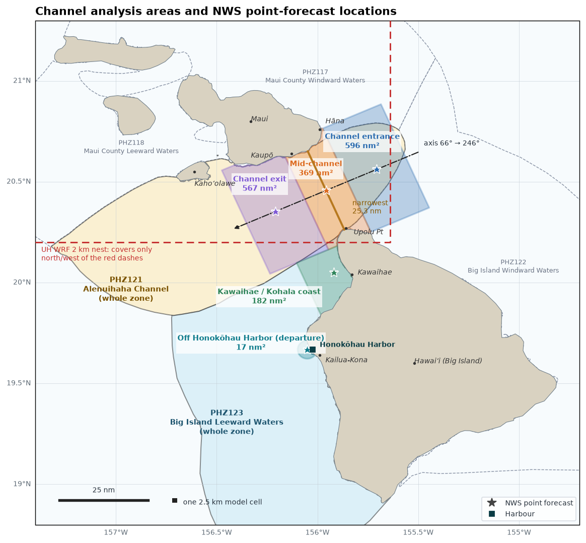
The areas this briefing analyses, used by every map and calculation on the page. The narrowest water between Maui and the Big Island is 25.3 nm, from Maui's Kaupō–Kīpahulu coast to Upolu Point (the orange line); the channel axis is perpendicular to it, 066°/246°. Mid-channel is the throat itself (±6.5 nm), with the entrance and exit 6.5–24 nm either side, a strip along the Kawaihae / Kohala coast, and water within 2.7 nm of a point 1.6 nm off Honokōhau Harbor. Stars mark where each area's NWS point forecast is taken. All areas are water only. The two marine zones they sit in, PHZ121 (Alenuihāhā Channel) and PHZ123 (Big Island leeward waters), are outlined and are also on the chart below. Tap the map for full size.
Model wind maps
Two models side by side for Maui to the Big Island (RRFS and NBM to start; pick any model, gust or REFS product in each menu). Colour is wind speed on each model's own 2.5 km grid, streamlines show direction; move over or tap a map to read the wind there.
Open the full map tool → REFS ensemble maps →
The full tool shows up to four maps on one time slider, plays the hours, and lists every model's run and forecast hours. The REFS maps show where the forecast is uncertain: the ensemble mean, its spread (1 standard deviation) and the chance of 20/30/35/40 kt.
Forecast wind by area
Forecast 10 m wind for each channel area from every model the briefing reads, on one chart. The shaded band is the range across the models and the NWS grid, and the grey line is their median, so a narrow band means they agree. The black line is the NWS Honolulu forecast (the grid the zone forecasts are written from). Tap a model to add its own line (dashed = gusts); tap RRFS last runs to see how the last six RRFS runs differ, which shows how much the forecast has been shifting. Drag the slider (or move over the chart) to read every model at one hour. The arrows under the chart show the models' average direction (weighted by speed), pointing downwind; red dashed lines mark the small craft advisory (25 kt) and gale (34 kt) thresholds. On the full-zone tabs the NWS zone forecast is drawn too: a dashed box for each period's wind range, a dotted line for its gusts and a strip for any headline; its wording is under the slider (tap NWS zone text to show it on the other tabs, using the zone the area is in).
RRFS extended is the 12Z run, which is also the newest RRFS run, so there is no separate RRFS latest line this time. When a newer short (18 h) run comes out, it is added as RRFS latest.
Model values are averaged over the area's grid points; gust is the 90th percentile across the area (the gustier part of it, not a single grid point). NWS values are at the area's reference point; for a whole zone they are the average of eight points spread through it. Speeds in knots. Build time Sat 03 Oct 06:30 HST.
Models: how often they run and which run is shown
| Source | What it is and how often it runs | Run shown | Age at build | Forecast hours used | Status |
|---|---|---|---|---|---|
| NWS | NWS Honolulu's gridded forecast, the grid the zone and point forecasts are written from; updated whenever forecasters issue (at least twice a day). | updated 2026-10-03T16:03Z Sat 06:03 HST | 0 h | ok | |
| RRFS extended | NOAA's new convection-allowing model, 2.5 km over Hawaii. 00/06/12/18Z runs go out 84 h (the 'extended' runs); the others go out 18 h. Every 3 h in today's pre-operational feed, hourly once operational on 14 Oct 2026. | 12Z Sat 03 Oct Sat 02:00 HST | 4 h | f001–f048 hourly, f051–f075 every 3 h | ok |
| NBM | National Blend of Models: a calibrated blend of many models, 2.5 km, a new run every hour. Continues after the RRFS change. | 15Z Sat 03 Oct Sat 05:00 HST | 2 h | f001–f048 hourly, f051–f072 every 3 h | ok |
| UH WRF | University of Hawaii WRF (run at UH, not NCEP, so not affected by the RRFS change): one run a day, 7 days; PacIOOS posts it about a day late. 2 km Maui-Oahu nest where an area fits in it, 6 km statewide otherwise. No gusts. | failed | |||
| REFS | Ensemble products built from the current and 6 h older RRFS runs plus the RRFS ensemble members; every 6 h (00/06/12/18Z), hourly out to 60 h, 2.5 km. | 12Z Sat 03 Oct Sat 02:00 HST | 4 h | f001–f060 hourly | ok |
RRFS extended is the newest 00/06/12/18Z run (out to 84 h). When a newer short run exists (out to 18 h) it is added as RRFS latest; the median and band use one RRFS, the extended. The pre-operational feed runs every 3 h; the operational RRFS (from 14 Oct 2026) runs hourly, and the page picks that up by itself. HiResW (ARW and FV3) is left out: NCEP retires it for Hawaii on 14 Oct 2026. NBM is a calibrated blend of many models rather than a model of its own. UH WRF has no gusts and publishes one run a day.
REFS ensemble by area
REFS is NOAA's high-resolution ensemble: it combines the latest and 6 h older RRFS runs with the RRFS ensemble members, so it can say how likely a wind is rather than giving one answer. Run 12Z Sat 03 Oct (Sat 02:00 HST), hourly to 60 h. Top: ensemble-mean wind with a band of ± one spread; the spread is the ensemble's standard deviation, so roughly two members in three fall inside the band. A wide band means the members disagree. In the Area average view the dotted lines are the lowest and highest area-average wind among the 11 runs at each time (every 3 h). They cover every run rather than two in three, so they often sit outside the band: the gap between them is the full range of outcomes the runs give. REFS's mean wind speed runs above the individual RRFS winds (about 1 kt mid-channel, up to ~5 kt along the Kohala coast where directions vary), so read it as the upper side of typical rather than the middle. Bottom: the chance of the wind reaching a threshold (tap a threshold to hide its line). Drag the slider to read every value at one hour.
The two buttons ask the same runs two different questions; they are not two separate opinions. REFS is made from the RRFS ensemble members plus the deterministic RRFS, and the 11 runs here are those runs (the five members of the latest run and of the run 6 h before, plus the deterministic RRFS). Area average asks each run for its average wind over this area and counts how many reach 25 kt (small craft advisory), 30 kt or 34 kt (gale), every 3 h to 60 h. Within ~20 nm (REFS) is NOAA's own product: the chance of 20, 30, 35 or 40 kt anywhere within roughly 20 nm of a point, so an area beside the jet can show a high chance while its own average wind stays light. For deciding whether the water you will be on reaches a threshold, the area average is the more direct answer.
ASCAT Coastal Winds (UHR)
This section shows the latest 12 coastal UHR ASCAT wind images. “Coastal UHR” (Ultra High Resolution, 12.5 km) products provide enhanced detail near coastlines, helping reveal localized wind features such as those in the Alenuihāhā Channel. Satellite orbits vary, so not all passes cover the area. Times are shown in UTC (Zulu). Hawaiʻi Standard Time (HST) is 10 hours behind UTC.
Tap the composite to open it full size.
ASCAT coastal wind images: NOAA / NESDIS Center for Satellite Applications and Research (STAR). Contains data Copyright 2026 EUMETSAT.
Sun & Moon
Lights on at sunset 18:10, off at sunrise 06:15 tomorrow: Rule 20 binds a vessel under way from sunset to sunrise, not from dark. Honokōhau Harbor is within a minute of these times.
| Mid-channelHST | Today3 Oct | Tomorrow4 Oct | Mon5 Oct |
|---|---|---|---|
| Nautical dawn | 05:27 | 05:27 | 05:28 |
| Civil dawn | 05:53 | 05:53 | 05:53 |
| Sunrise | 06:15 | 06:15 | 06:15 |
| Local apparent noon (LAN) | 12:12 | 12:12 | 12:12 |
| Sun's altitude at LAN | 65.3° S | 64.9° S | 64.5° S |
| Sunset | 18:10 | 18:09 | 18:08 |
| Civil dusk | 18:32 | 18:31 | 18:30 |
| Nautical dusk | 18:57 | 18:56 | 18:56 |
| Daylight | 11h 54m | 11h 53m | 11h 52m |
24-hour HST. Civil twilight (sun 6° down) is the light left after sunset, enough to see other boats and the harbour entrance: the practical limit for coming in. By nautical dusk (12° down) the horizon is gone. Twilight is short this close to the tropics, about 22 minutes, so dark comes quickly after sunset. Local apparent noon (LAN) is when the sun crosses the meridian: highest in the sky, the time of a noon sight and of the strongest UV. The channel is 6° west of the meridian HST keeps time by, so LAN comes about 24 minutes after clock noon on average: from about 12:07 in early November to about 12:38 in mid February, as the equation of time runs through the year. The altitude is the sun's height above the horizon then, and which way it bears (south for most of the year; north from late May to mid July, when the sun passes overhead).
Moon
Last quarter, 49% lit · today it sets 13:26 · near neap tides (the smallest ranges of the fortnight).
- New moon Sat 10 Oct 05:57
- First quarter Sun 18 Oct 06:05
- Full moon Sun 25 Oct 18:27
- Last quarter Sun 1 Nov 10:36
| Moon at noon | Rises / sets | |
|---|---|---|
| Today3 Oct | Last quarter, 46% lit | sets 13:26 |
| Tomorrow4 Oct | Waning crescent, 35% lit | rises 00:33 sets 14:18 |
| Mon5 Oct | Waning crescent, 24% lit | rises 01:37 sets 15:03 |
The moon decides how dark a night crossing is: a full moon rises about when the sun sets and is up all night, a new moon not at all. It also sets the tides: spring tides, the largest ranges, follow new and full moon by a day or two; neaps follow the quarters. Hawaiʻi's tides are small (about 2 ft at Kawaihae, a little more at springs), so here they matter mostly for the currents along the coasts and at the channel's ends. Computed for mid-channel to within a few minutes; rise and set are the top of the disc on a sea horizon.
UV index
11Peak 11 (extreme) at 12:00 today · moderate or higher 09:00–17:00. At that level unprotected fair skin reddens in roughly 12 minutes: well inside a crossing. Sunscreen on the face, neck, ears and the backs of the hands, a hat and sunglasses: there is no shade on deck, and the water reflects part of the dose back up from below, where a brim does not reach.
The EPA's hourly UV index forecast for ZIP 96755 (Kapaʻau, North Kohala, on the channel's Big Island shore), today, HST; local apparent noon 12:12. Bands are the WHO's: 0–2 low, 3–5 moderate, 6–7 high, 8–10 very high, 11+ extreme. At 20°N the midday sun is high all year, so the index reaches very high or extreme on most clear days. About the UV index.
Experimental — Alenuihāhā Channel Wind Analysis
What drives the wind through the Alenuihāhā Channel, one ingredient at a time: the Pacific High that sets up the trades, the pressure gradient across the islands and across the channel itself, the wind feeding in and out, and the trade-wind inversion that caps it. Each part gives the latest numbers first; the method is under How it works.
Pacific High · Isobars over the channel · Station pressure gradient · Buoy pressure gradient · Inflow and outflow · Trade-wind inversion
Synoptic-Scale Forcing: the Pacific High
How it works
The Pacific High's lobes are found automatically in the latest NOAA GFS sea-level pressure (0.25°) over 25–50°N, 125–180°W, at T−24h, now (T0), T+24h and T+48h, and ranked by how hard each pushes toward the channel: the pressure difference between the lobe and the channel over their distance (the gradient), and how well that push lines up with the channel axis (066°/246°). Push along the axis is the geostrophic wind that gradient implies, resolved along the channel. A lobe's size is the area within N hPa of its peak (red outline on the maps).
Where the high is going
Lobe centres at each time over the current isobars; the dashed line follows the top-ranked lobe.
The analysis at each time
Top lobe by time
| Time | Valid (HST) | High centre | Pressure | Distance to channel | Gradient to channel (hPa/1000 nm) | Off channel axis | Push along the axis |
|---|---|---|---|---|---|---|---|
| T−24h | Fri 02 Oct 02:00 | 38.5°N 136.5°W | 1020.8 hPa | 1,479 nm | 6.4 | 18° | 10 kt |
| T0 (now) | Sat 03 Oct 02:00 | 50.0°N 131.5°W | 1022.1 hPa | 2,121 nm | 4.2 | 24° | 7 kt |
| T+24h | Sun 04 Oct 02:00 | 36.5°N 166.2°W | 1023.8 hPa | 1,104 nm | 7.9 | 82° | 2 kt |
| T+48h | Mon 05 Oct 02:00 | 41.2°N 180.0°W | 1029.4 hPa | 1,747 nm | 7.9 | 62° | 6 kt |
Local Isobar Field over the Channel
How it works
A flat pressure surface is fitted to the GFS sea-level pressure over the ocean in a ~180 nm box around the channel (land excluded), for T−24h, now, T+24h and T+48h. Its slope gives the geostrophic wind: speed, direction, the angle to the channel axis (066°/246°) and the part along it. The box spans the whole channel, so there is one value per time; differences between the entrance, mid-channel and exit come from the high-resolution models. Geostrophic wind ignores friction and the terrain's squeeze, so the real channel wind can be well above or below it.
By time
| Time | Valid (HST) | Speed kt | From °T | Off axis | Along axis kt | Fit |
|---|---|---|---|---|---|---|
| T−24h | 2026-10-02 02:00 | 13 | 145° | 79° | 3 | Moderate (R² 0.92, RMS 0.13 hPa) |
| T0 (now) | 2026-10-03 02:00 | 15 | 107° | 41° | 11 | Moderate (R² 0.91, RMS 0.16 hPa) |
| T+24h | 2026-10-04 02:00 | 21 | 109° | 43° | 16 | Moderate (R² 0.91, RMS 0.23 hPa) |
| T+48h | 2026-10-05 02:00 | 22 | 109° | 43° | 16 | Moderate (R² 0.94, RMS 0.19 hPa) |
Pressure Gradient Across the Channel (Stations)
Why this is steeper than the isobars above. The GFS field in Local Isobar Field has pressure falling 0.9 hPa per 100 nm toward 197°; the stations measure 2.1 toward 179°: in about the same direction and about 2 times steeper, and both are right at their own scale. GFS fits a 180 nm box on a 0.25° grid that cannot resolve the islands; the stations sit on either side of the islands' own pressure pattern, higher on the windward side where the trades pile up against Haleakalā and Kohala and lower in the lee. That local difference is what drives the channel jet, so it is the one to watch here. RRFS, at 2.5 km, puts 2.6 hPa per 100 nm toward 198° at the same stations, about 1.3 times what they measure: a model that resolves the islands sees the steep local gradient too.
How it works
The push through the channel measured at its own scale. Each hour a flat pressure surface is fitted through the stations around the channel that report sea-level pressure (Kahului airport (PHOG), Hamoa (near Hana) (023HI), Iole (near Upolu Pt) (075HI), Kawaihae harbor (1617433), Kona airport (PHKO), Lanai airport (PHNY)), after removing each station's constant offset over the last five days. Pressure drop toward the exit is how fast pressure falls along the channel axis toward the exit (066°/246°): the forcing that accelerates air through the channel. Channel-wind potential is the speed air would reach running down that drop from the entrance to the exit (~49 nm), √(2Δp/ρ): an upper bound, since friction and mixing hold the real wind below it, but it rises and falls with the forcing. The dashed red line is the same calculation from RRFS's forecast pressure at the same stations, so you can see whether the observed gradient is running ahead of the model or behind it. No geostrophic wind is given: this close to the tropics and the islands the local gradient is far from geostrophic balance.
The fitted isobars now
Magenta: the fitted isobars (hPa, every 1; thin lines at the half), arrow toward low pressure. Dashed: the channel throat. Values: each station's pressure less its 5-day offset; grey = no report this hour.
Regional Pressure Gradient (Buoys)
How it works
Buoy 51000 (23.5°N, 153.8°W) lies northeast of the islands and buoy 51002 (17.1°N, 157.8°W) southwest of them, about 450 nm apart. Their pressure difference is the large-scale push across the Hawaiian chain; their winds are the trade flow going in and coming out. The angle "off the channel axis" is between each buoy's wind and the axis (066°/246°); winds lined up with the channel funnel through it more readily.
| Latest Sat 05:40 | 3 h mean | 24 h mean | 24 h typical (middle half) | 24 h highest | |
|---|---|---|---|---|---|
| Pressure difference 51000 minus 51002 | 3.3 hPa | 2.8 | 2.9 | 2.7–3.1 | 3.6 Fri 20:00 |
| Gradient across the islands | 7.4 hPa/1000 nm | 6.4 | 6.4 | 6.0–6.9 | 8.0 Fri 20:00 |
| Geostrophic wind from that gradient | 13 kt | 11 | 11 | 10–12 | 14 Fri 20:00 |
| Inflow wind, 51000 | 12 kt | 10 | 11 | 10–12 | 14 Fri 06:10 |
| Inflow gust, 51000 | — | 12 | 13 | 12–16 | 17 Fri 06:10 |
| Inflow off channel axis | 14° | 12° | 17° | ||
| Outflow wind, 51002 | 14 kt | 14 | 13 | 12–14 | 14 Fri 07:00 |
| Outflow gust, 51002 | — | 16 | 15 | 16–16 | 17 Fri 09:30 |
| Outflow off channel axis | 14° | 23° | 33° |
The last 24 hours
Inflow and Outflow Wind
Wind and gusts at both buoys over 24 h, and how far each is from the channel axis (0° = straight down the channel; within 15° is well lined up).
Trade-Wind Inversion (Hilo soundings)
How it works
The inversion is a lid on the trade winds: a strong, low one squeezes the flow through the channel and speeds it up; a weak or missing one lets it mix upward. Each twice-daily balloon from Hilo (91285) is searched for a layer below ~4 km that warms and dries upward. Warming Δθ is the jump in potential temperature across it (stability), Drying ΔRH the drop in relative humidity, and the strength index (0–10) combines them, favouring sharp, dry layers of moderate thickness. Supportive lids usually have a base near 1.5–2.5 km, 100–600 m thick, Δθ of 2 K or more and ΔRH of 15–30% or more. Check the Skew-T diagrams for the full profile.
| Launch (HST) | Inversion base–top | Thickness | Warming Δθ | Drying ΔRH | Strength index (0–10) | Wind 925–850 hPa | Risk |
|---|---|---|---|---|---|---|---|
| Thu 01 Oct 14:00 | 1,841–2,144 m (6,040–7,034 ft) | 303 m | 5.6 K | 42% | 8.9 | 3 kt | Low |
| Fri 02 Oct 02:00 | 3,523–3,736 m (11,558–12,257 ft) | 213 m | 4.0 K | 50% | 7.6 | 5 kt | Low |
| Fri 02 Oct 14:00 | 2,142–2,386 m (7,028–7,828 ft) | 244 m | 3.4 K | 33% | 2.7 | 3 kt | Low |
| Sat 03 Oct 02:00 | 2,159–2,539 m (7,083–8,330 ft) | 380 m | 5.2 K | 59% | 6.3 | 4 kt | Low |